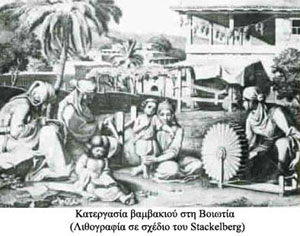

| Η υφαντουργία  Η υφαντουργία παρέμεινε σε ολόκληρο το 18ο αιώνα η κυριότερη οικονομική δραστηριότητα στην ηπειρωτική Ελλάδα. Εύλογα οι περιηγητές αναφέρουν ότι « όπου και να πήγαινες, από τη Θράκη ως την Πελοπόννησο και από την Ήπειρο ως την Κρήτη, έβλεπες στο δρόμο γυναίκες και κορίτσια να γνέθουν μαλλί και βαμβάκι…» Τα περισσότερα σπίτια διέθεταν αργαλειούς που κάλυπταν τις ενδυματολογικές ανάγκες της οικογένειας. Από τους αργαλειούς αυτούς δημιουργήθηκαν αργότερα οι πρώτες βιοτεχνίες που σε ορισμένες περιοχές όπως στη Θεσσαλία και τη Μακεδονία εξελίχθηκαν σε σημαντικά βιοτεχνικά κέντρα υφαντουργίας. Τα Αμπελάκια και ο Τύρναβος Θεσσαλίας αναδείχθηκαν σε μεγάλα κέντρα νηματουργίας και βαφής κόκκινων βαμβακερών νημάτων, που ήταν περιζήτητα στις αγορές της Δύσης. |
||